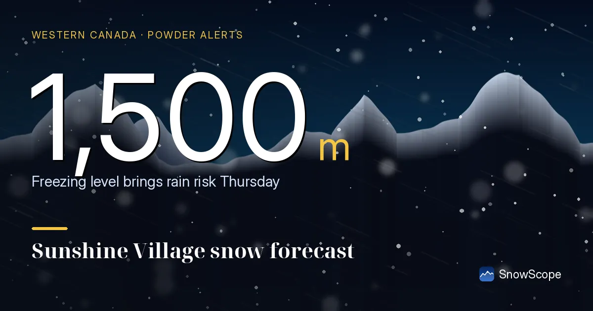
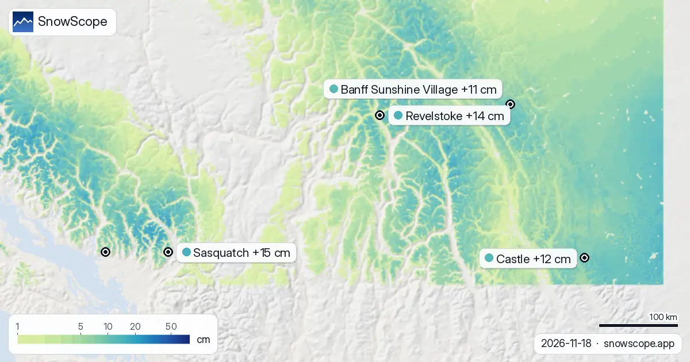

Sunshine Village snow forecast: 1,500 m freezing level brings rain risk Thursday
Snow forecast sunshine – Fresh snow arrived across Western Canada in the last three days, with Castle Mountain and Revelstoke picking up 12 to 14 cm. The catch: a freezing level of 1,500 m will push rain down to the summits at Banff Sunshine Village on Thursday, capping the new powder and binding the base.
See the live snow forecast for Banff Sunshine Village in the SnowScope appSnow depth, powder alerts and the 3D map, free.
Where the new snow fell
A storm cell moved in over the past 72 hours, delivering measurable snow across the region. Castle Mountain got 12 cm of new snow, with the most falling on Monday and Tuesday. Revelstoke and Sasquatch both saw 14 to 15 cm in the same window. Grouse Mountain picked up 10 cm. Even Banff Sunshine Village, the highest resort here at 2,686 m, received 11 cm over three days.
The snow is thin at lower elevations. At Sasquatch's base (975 m), our model shows just 2 cm on the ground today. Grouse Mountain sits at only 5 cm on the upper slopes. This is early season snow on mostly bare ground, so coverage is patchy and rocks are likely close to the surface on many slopes.
| Resort | Snow depth | New snow, 72 h | Coming, next days | Top |
|---|---|---|---|---|
| Sasquatch | 23 cm | 15 cm | 0 cm | 1,316 m |
| Revelstoke | 44 cm | 14 cm | 0 cm | 2,224 m |
| Castle | 16 cm | 12 cm | 4 cm | 2,259 m |
| Banff Sunshine Village | 21 cm | 11 cm | 0 cm | 2,686 m |
| Grouse Mountain | 5 cm | 10 cm | 0 cm | 1,228 m |

Rain risk at the highest peaks
The critical issue this week is not more snow but rising air temperature. On Thursday November 19, the freezing level at Banff Sunshine Village will climb to 1,500 m. The lift top sits at 2,686 m, well above that line. This means rain will fall on the fresh snow at the summit.
Rain on fresh snow does two things: it stops the powder from staying light, and it creates a crust that bonds to the base. That crust can trap water or become hard and icy. It is not a disaster for skiing, but it ends the pure powder window. At Revelstoke, which tops at 2,224 m, rain will fall closer to the summit too, though the highest slopes may escape with wet snow instead of pure rain.
Castle Mountain stands out
Castle Mountain is different. It sits lower than the other high peaks, with its summit at 2,259 m. More importantly, 6 cm of new snow fell there yesterday (Wednesday), which is unusual after three quiet days. The freezing level there on Thursday will drop to 640 m, then to 510 m on Friday, so the rain risk is lower. Castle also has more snow forecast: about 4 cm over the next few days, mostly on Thursday and Friday.
If you are chasing fresh snow, Castle is the better bet this week. The new fall there will not be capped by rain as early as the highest summits.
What the numbers tell us
Snow coverage across Western Canada has grown from 278,460 km² two days ago to 322,740 km² today. That gain of 44,000 km² is real: the region is whiter. But the absolute depths are still thin. At mid-slope elevation (1,369 m) at Revelstoke, our model reads 11 cm. At Sasquatch's mid level (1,145 m), it is just 6 cm. These are estimates for large areas, not exact measurements, so they come with uncertainty. On past seasons, by mid-November, Sasquatch mid-slopes usually hold 45 cm. Today we see 5 cm there. That is 11 per cent of normal.
The snow that fell Monday was the heaviest hit. By Tuesday, the weather had dried out. Yesterday and today brought nothing new. The forecast for Thursday through Friday is dry too, though Thursday's rain will reset the surface.
What to watch on the mountains
The snow line matters most right now. At Revelstoke on November 20, the freezing level will drop to 160 m, so almost all terrain will see snow, not rain. At Castle, it will hover around 510 m. But at Banff Sunshine Village on Thursday, rain is certain above 1,500 m. If you ski there that day, expect wet snow high and rain lower down.
The window for dry powder is very narrow this week because the freeze is high and the new snow is thin. Early season conditions mean a short honeymoon. By Friday, the crust will set hard, and the powder phase will be over.
Tips for skiers
- If you want fresh snow without rain, go to Castle Mountain on Thursday or Friday. The freezing level stays below 1,150 m both days, so rain will not reach the new powder.
- At Banff Sunshine Village, ski early Thursday before 10 a.m., or wait until Friday when the freezing level drops below 1,100 m and snow returns to all elevations.
- Avoid lower elevations on Thursday. Base areas at all resorts will see rain or wet slush as the freezing level peaks.
- Check the official avalanche bulletin before you go off-piste. Early season snow is thin and may hide rocks or sit loosely on bare ground.
- Upper slopes at Revelstoke will see snow fall on Thursday, not rain, so it remains skiable. The snow line sits around 1,360 m there.
About these numbers
Resort snow depths are the deepest snow on the resort's upper slopes from the SnowScope snow model (about 1 km, run of 18 November); they are estimates for an area, not a measurement at one point. Station values are measurements on the date shown. Forecasts can change. Always read the official avalanche bulletin before going off-piste.
Official avalanche bulletins: Avalanche Canada
Cite this report
For research, teaching or the press: the numbers and charts are free to reuse under CC BY 4.0 with this citation.
SnowScope (2026), Sunshine Village snow forecast: 1,500 m freezing level brings rain risk Thursday, https://snowscope.app/blog/en/2026/11/western-canada-banff-sunshine-village-fresh-snow-powder-alert-18-november-2026.html, accessed 2026-11-18
SnowScope (Atlas Labs). (2026, November 18). Sunshine Village snow forecast: 1,500 m freezing level brings rain risk Thursday. SnowScope snow reports. https://snowscope.app/blog/en/2026/11/western-canada-banff-sunshine-village-fresh-snow-powder-alert-18-november-2026.html
BibTeX
@misc{snowscope2026westerncanadabanffsunshi,
author = {{SnowScope (Atlas Labs)}},
title = {Sunshine Village snow forecast: 1,500 m freezing level brings rain risk Thursday},
year = {2026},
month = nov,
howpublished = {\url{https://snowscope.app/blog/en/2026/11/western-canada-banff-sunshine-village-fresh-snow-powder-alert-18-november-2026.html}},
note = {Published 2026-11-18 16:53 UTC; accessed 2026-11-18}
}· CC BY 4.0 · Methods, data and tools →
Banff Sunshine Village: snow and temperature by height, this winter vs last (tools) →
Follow Banff Sunshine Village
Free: a message when fresh snow is coming, and the forecast every morning.
More snow reports

Skiing Lake Louise early in the season: why it starts early, what November and December snow usually looks like in 46 past winters, and how to ski thin early cover.

Whistler Blackcomb for every level, with our snow history: about 370 cm at the usual peak at mid-mountain over 46 past winters, March and April the deepest months.

Whistler Blackcomb got 75 cm of new snow at the top in a week, then a warm storm with 124 mm of water. A simple guide to base, fresh snow, rain and crust.